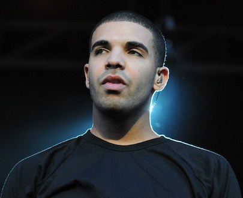

Drake
Before he was winning Grammys and ruling the world of pop culture, Aubrey Graham lived on Weston Road and in Forest Hill. He also played a wheelchair-bound teen on Degrassi. Our beloved 6ix God is still very much connected to—and proud of—his hometown.

Jim Carrey
The A-list comedian grew up inside and around the GTA, with stints in Scarborough and North York, and came up in the Toronto comedy scene in the late '70s. Carrey moved to LA by the time he was 21, but apparently, he still loves the Leafs.
Samantha Bee
She may be famous for her clever take on American politics, but the former Daily Show correspondent was born and raised right here in Toronto. Bee, who was named one of Time Magazine's 100 most influential people, is also the first woman ever to host a late-night satire show.